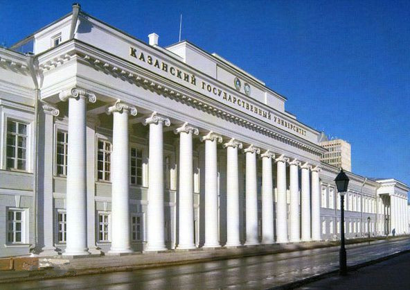

Kazan State University [Introduction]: One of Russia's oldest universities—Kazan State University—was founded on November 5, 1804, in the city center of Kazan. It is the third university in Russia to be established after Moscow University and Saint Petersburg University. Introduction: One of Russia's oldest universities—Kazan State University—was founded on November 5, 1804, when...
Kazan State University
[Introduction]: One of Russia's oldest universities—Kazan State University—was founded on November 5, 1804, in the city center of Kazan. It is the third university established in Russia after Moscow University and Saint Petersburg University.

Introduction
One of Russia's oldest universities—Kazan State University—was founded on November 5, 1804. At that time, Tsar Alexander I agreed and signed the approval document for the founding of Kazan State University, which established the university's name and regulations. Kazan State University was the third university established in Russia after Moscow University and Saint Petersburg University.
Geographical location
Kazan State University is located in the city center of Kazan. Kazan is the capital of the Republic of Tatarstan of the Russian Federation, covering an area of 412 square kilometers. By 2005, Kazan will celebrate its 1000th anniversary, with a population of about 1.2 million and 101 ethnic groups. Kazan has a long history and has long been a major transportation route and commodity distribution center in the Volga River basin since ancient times. Currently, Kazan is the economic and cultural center of the Republic of Tatarstan, with main industries including machinery manufacturing, chemicals, and petroleum. Kazan is a famous historical and cultural city in Russia. Its historical and cultural heritage has earned it an "A" level of cultural status alongside Moscow and St. Petersburg. Many world-renowned scientific and literary masters have worked and lived here, such as Lenin, Tolstoy, Herzen, and Shevkin. The entire city is located on the banks of the Volga River, with beautiful scenery and pleasant climate, about 800 kilometers from Moscow, the capital of Russia.
Science and culture center
For many years, Kazan State University has been the top institution in eastern Russia, becoming the center of education and science and culture in Russia, with a certain academic faction forming within the university. The university enjoys a high reputation in Russia in mathematics, chemistry, medicine, linguistics, geology, geography, botany, and other fields. Famous scientists and inventors include: Lobarevsky, founder of non-Auguridean geometry; Klaus, who discovered the chemical element ruthenium; Butrerov, founder of the theory of organic synthetic structures; Zavoysky, inventor of electronic magnetic resonance; Artshuler, inventor of acoustic magnetic resonance, and others. Since its founding, the university has trained more than 70,000 experts, including many renowned scholars and social activists. Today, Kazan University and more than ten other universities have established educational bases in the Volga River basin.
Components
Over more than two hundred years, Kazan State University has gradually developed a complex of 19th-century Russian architectural styles. The university's teaching and scientific centers include a scientific library, a chemical science research institute, a faculty of mechanics and mathematics, seven museums, a botanical garden, two meteorological and astronomical observatories, an information technology center, a publishing house, a printing center and laboratories, a cultural and sports hall, and a sports and sports base.
Partnership
Kazan State University has now established partnerships with more than 40 institutions worldwide and joined the EREX system; Fulbright Act Fund; U.S. Information Agency USIA; DAAD; Copernicus International Nickel Company Евразия, and is also a member of the International University Federation, the Eurasian University Federation, and the University Nationalities Federation.
departments and departments were established
Kazan State University is divided into 15 departments, 7 scientific research centers, and 17 departments.
The 17 departments are: Department of Biological Soil Science, Department of Computational Mathematics and Control, Department of Geography and Geoecological Ecology, Department of Geology, Department of Journalism and Sociology, Department of History, Department of International Relations and Politics, Department of Mechanics and Mathematics, Department of Psychology, Department of Tatar Language and Literature and History, Department of Physics, Department of Linguistics, Department of Physics, Department of Linguistics, Butrelov School of Chemistry, Department of Ecology, Department of Economics, Department of Law, and School of Oriental Studies.
Honor
Kazan State University lasts four to five years. Upon graduation, graduates are awarded bachelor's, master's, or "expert" certificates. Graduates of the Department of Chinese Language can receive a teaching certificate; Graduates of the Department of Physics can receive a Physics Secondary School Teacher Certificate.
喀山国立大学
【导读】：俄罗斯最古老的大学之一－喀山国立大学成立于1804年11月5日，于喀山市中心地区，是俄罗斯继莫斯科大学和圣彼得堡大学之后成立的第三所大学。
简介
俄罗斯最古老的大学之一-喀山国立大学成立于1804年11月5日，当时沙皇亚历山大一世同意并签署了成立喀山国立大学的批文，确定了该校名称与规章制度，喀山国立大学是俄罗斯继莫斯科大学和圣彼得堡大学之后成立的第三所大学。
地理位置
喀山国立大学位于喀山市中心地区，喀山市是俄罗斯联邦鞑靼斯坦共和国的首府，面积412平方公里，到2005年喀山市将迎来建城1000周年，城 市人口约120万，现有101个民族.喀山市，历史悠久，自古以来就是伏尔加河流域交通要道和商品集散地。目前，喀山市是鞑靼共和国经济文中心，主要工业部门为机械制造、化工和石油等。喀山市是俄罗斯著名的历史文化名城，其历史文化价值遗产使之与莫斯科、圣彼得堡并列为“A”级文化城市，许多世界知名的科学大师、文学大师都在这里工作和生活过，如列宁、托尔斯泰、赫尔岑、舍甫金等，整个城市座落于伏尔加河岸边，风景秀丽，气候怡人，距俄罗斯首都莫斯科大约 800公里。
科学文化中心
许多年以来，喀山国立大学是俄罗斯东部地区最高等的学府，该校已经成为了俄罗斯教育和科学文化中心，在学校里形成了一定的学术派别。该校在数学、化学、医学、语言学、地质学、地理植物学等方面在俄罗斯享有很高的声誉，著名的科学家和发明家有：创立非呕几里德几何学的洛巴列夫斯基;发现化学元素钌的 克劳斯;有机合成结构理论的创始人布特列罗夫;电子磁共振的发明人扎沃伊斯基;声学磁共振的发明人阿尔特舒勒等等。自建校以来，学校共培养了7万多名专家，其中包括很多著名的学者、社会活动家等，现在喀山大学和其他十多所高校已经形成了伏尔加河流域的教育基地。
组成部分
喀山国立大学在两百多年的时间里逐渐形成了一个十九世纪俄罗斯建筑风格的建筑群，大学的教学和科学中心由科学图书馆、化学科学研究院、力学数学科学院、7个博物馆、植物园、两个气象天文观测台、信息工艺技术中心、出版社、印刷中心和实验室、文化体育馆、运动保健基地等组成。
合作关系
喀山国立大学现今已经和世界上40多所院校建立合作关系，加入了EREX体系;富布莱特法案基金(Fulbright);美国新闻署USIA;DAAD;哥白尼国际镍业公司Евразия等组织，并且也是国际大学联合会、欧亚大学联合会、大学民族联合会的会员。
系科设置
喀山国立大学共分为15个部门、7个科学研究中心和17个系。
17个系分别为：生物土壤系、计算数学与控制系、地理与地理生态系、地质系、新闻与社会学系、历史系、国际关系与政治系、力学数学系、心理学系、鞑靼尔族语文学与历史系、物理学系、语言学系、布特列罗夫化学学院、生态系、经济系、法律系、东方研究学院。
荣誉
喀山国立大学学制为四-五年，毕业以后颁发学士、硕士或“专家”的资格证书，语文学系毕业生可颁发教师资格证书；物理学系毕业生可颁发物理中学教师资格证书。
English edition. Select 中文原文 to compare with the original Chinese article.
This article is edited and published by Liaoning Overseas Study Service Co., Ltd. The content is for study abroad planning reference only. Unauthorized reproduction is prohibited.
Information on policies, regulations, admissions brochures, and program fees is timely. Please refer to the latest releases from official institutions and institutions in various countries; For detailed verification, please Contact an advisor。